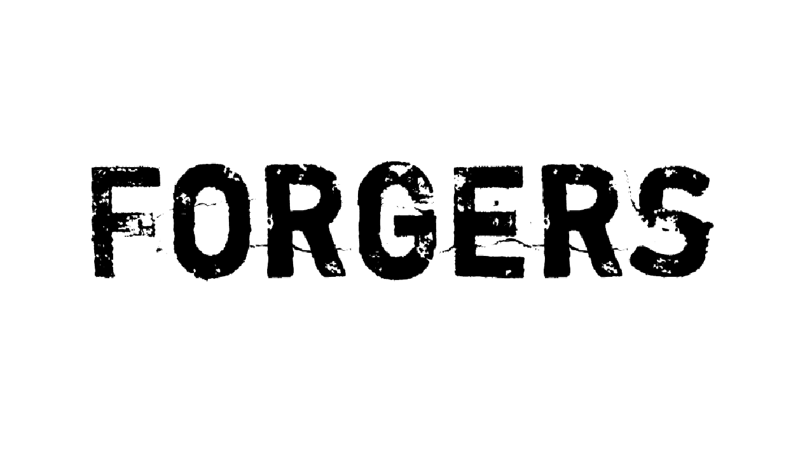
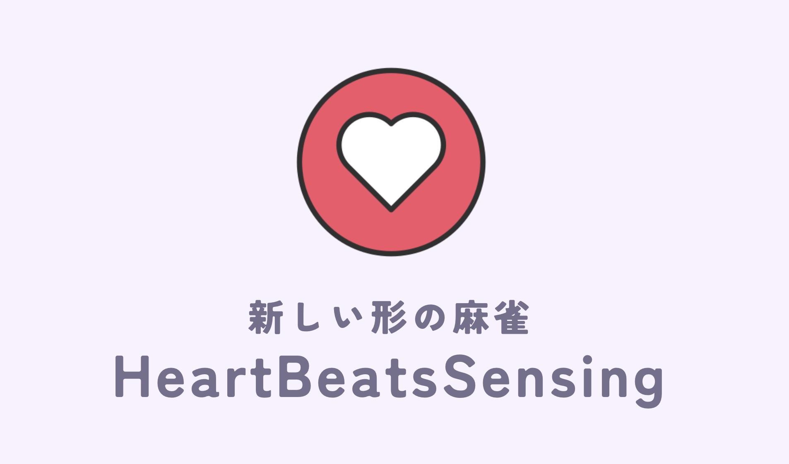

History
これまでの人生の流れについて軽くまとめていきたいと思います。
大学3年生
株式会社Forgers
Unityなどを用いてXR系のアプリケーションの開発を行う。
2024月 12月
#Forgers
#XR
#Unity

株式会社CARTA HOLDINGS Treasureにてインターンを行う
株式会社CARTA HOLDINGSの2024年度インターン「treasure」に3週間参加しました。
2024月 8月
#CARTA HOLDINGS
#Treasure
#Hono
#Vite
#アジャイル開発
DroidKaigiにて位置情報サービス(Geofence)の使い方について登壇をしました。
内容としては、自作のGeofenceの使い方とGoogleMobileServiceのGeofenceの違いを述べたり、電池寿命を伸ばすための工夫などをスライド150ページほどでまとめました。
2024月 8月
#カンファレンス
#位置推定
#Geofence
#GoogleMobileService
#Android
大学2年生
2023 技育CAMPキャラバン名古屋にて、企業賞を受賞
雀をする時にウェアラブルデバイスをつけ、心拍数を取得し全員で確認をすることで新たなゲーム性を追加するアプリケーションの開発
2023月 11月
#Android Wear
#心拍数
#ハッカソン
#Next.js
#Python
システム工学研究会にて会長になる
愛知工業大学公認サークルであるシステム工学研究会の会長になりました。IT技術を学びながらみんなで楽しめるサークルを目指しました。
2023月 11月
#sysken
#会長
#愛知工業大学
ライフイズテック株式会社でメンター業務を行う
中高生にプログラミング技術を教える企業でメンターとして、主にSchool事業とキャンプ事業に携わり、プログラミングの指導や生徒のサポートを行っていました。
2023月 7月〜
#Life is Tech
#メンター
#Unity
#マインクラフト
#Android
大学1年生
株式会社Relicに長期インターンを行う
新規事業の立ち上げを戦略/企画立案から開発、グロースまで一気通貫で行う事業を行う会社で、モバイルエンジニアとして、開発を行ってきた。
2023年 1月~2024年 8月
#Loope
#Flutter
#iPhone
2022 サポーターズ技育キャンプvol8にて優秀賞の受賞
ハッカソンの一つである、技育キャンプにて「FreeWi-Fi自走式バージョン」にて、優秀賞を受賞。
2022年 10月
#Free Wi-Fi
#ラジコン
#位置推定
#ハッカソン
愛知工業大学内イベント「工科展」にて出展を行なった
聞き逃しを0にするアプリ 「lock-on」を開発した。授業中に録音、文字起こしを行い、検索をしやすくする
2022年 10月
#Android
#文字起こし
#授業
#ハッカソン
2022年技育展「世の中を便利にする」部門にて登壇
技育キャンプvol.5にて開発した、「部屋の入り見れる像」をパワーアップして登壇しました
2022年 8月
#iBeacon
#Firebase
#ハッカソン
#Android
#Raspberry Pi
#大学生
2022年技育展「世の中を楽しくする」部門にて登壇
技育キャンプvol.5にて開発した、「隠れてTwitter見れる蔵」をパワーアップして登壇しました
2022年 8月
#VSCode
#拡張機能
#ハッカソン
#TwitterAPI
2022 Open Hack U 最優秀賞受賞
すれ違い通信を持ちて周りの人からファッションをチェックしてもらうシステムの構築を行う
2022年 8月
#iBeacon
#すれ違い通信
#ファッションチェック
#ハッカソン
#TwitterAPI
2022 サポーターズ技育キャンプvol.5 努力賞受賞
ハッカソンの一つである、技育キャンプにて「Twitter隠れてみれる蔵」にて、努力賞を受賞。VSCodeの拡張機能を用いてどんな環境にいてもTwitterを見ることができるサービスの開発をおこなった。
2022年 7月
#VSCode
#拡張機能
#ハッカソン
#TwitterAPI
2022サポーターズ技育キャンプvol.3 努力賞受賞
ハッカソンの一つである、技育キャンプにて「部室の人数をリアルタイムで表示してくれるサービス〜人の入り見れる蔵〜」にて、努力賞を受賞。 ibeaconやFirebaseなどのさまざまな技術やプラットフォームを用いてチーム開発を行なった。
2022年 6月
#iBeacon
#Firebase
#ハッカソン
#Android
#Raspberry Pi
#大学生
愛知工業大学入学
情報科学部 情報科学科 コンピュータシステム専攻に入学し、より詳しい知識を勉強する。
2022年 4月
#大学生
#入学
高校生
総合競技大会プログラム部門 2位
電子回路とプログラムを行い、組み立てやプログラミングのスピードと正確さを競う大会にて、プログラムの部門にて2位を取得しました。総合部門では惜しくも9位でした。プログラミングではPICを用いたプログラミングで組み込みシステムについて勉強をおこなった
2021年 6月
#Microchip
#C言語
#組み込みシステム
#PIC
#高校生
吹奏楽部入部
プログラミング一色の人生ではなく、音楽の趣味も持っており、学校の定期演奏会などにクラリネットを持ち演奏をしています。
2019年 4月
#吹奏楽
#高校生